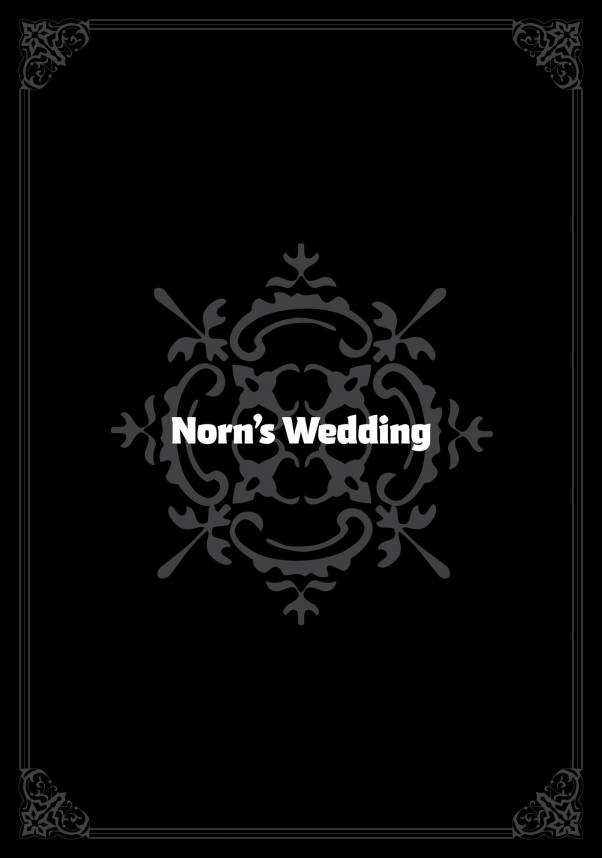

-Norn-
BEN RUİJERD İLE EVLENECEKTİM. Her şey öylesine hızlı gelişti ki. Ağabeyim bana bir sürü soru sordu, ben de hepsine dürüstçe cevap verdim. Daha on gün bile geçmeden, benimle Ruijerd’in görüşmesi için bir buluşma ayarladı. O gün, Ruijerd bana âşık olduğunu söyledi ve evlenme teklif etti. Kendimi havalarda yürüyormuş gibi hissediyordum.
Düğün hazırlıkları hızla başladı ve on gün içinde yapılacaktı. Ağabeyim ve Ruijerd işleri birer birer hallediyordu, benim tek görevim ise Superd kadınlarıyla birlikte düğün kıyafetimi dikmekti. Kıyafet tamamen Superd tarzındaydı, Ruijerd’in her zaman giydiği şeylere benziyordu.
Düğün Superd geleneklerine göre yapılacaktı. Aslında her zaman Millis tarzı bir düğünü biraz hayal etmişimdir, ama Superd usulü bir düğün de beni rahatsız etmedi. Bu, Ruijerd’in gelini olacağımı hatırlatıyordu. Üstelik tüm Superdler harika insanlardı. Daha iyisini isteyemezdim. Hem, muhtemelen Millis tarzı bir törende, insanların önünde onun alnından öpmem Ruijerd’i rahatsız ederdi.
Ne olursa olsun, Ağabeyim, “Bunu bana bırak,” diyordu. Her şeyi minnetle kabul ettim. Ama içimden bir Millis Kolyesi istemek geçiyordu. Belki bu konuda ağabeyime bir şeyler söylerim. Sonuçta, ağabeyimin bana bir şey alması için muhtemelen son şansımdı.
Bunları düşünürken odamı topluyordum. Burası, Ruijerd beni Aisha ile birlikte buraya getirdiğinden beri kullandığım odaydı. Dürüst olmak gerekirse, bunca zamandan sonra yurttaki odam buradan daha çok evim gibi hissettiriyordu. Ama eşyaları toplarken fark ettim ki, her şeyin bir anısı vardı.
Mesela, Zanoba’nın bana verdiği Ruijerd figürü… İlk gördüğümde o kadar heyecanlanmıştım ki ona yalvarmış ve figürü almıştım. Mezuniyetime kadar hep yurttaki odamda durdu. Ona bakmak, günlük rutinimin bir parçası olmuştu. Tam olarak Ruijerd’e benzemiyordu ama onun olduğunu anlıyordunuz. Ne zaman görsem, onu özlerdim.
Sonra ahşap antrenman kılıcım vardı. Eris bana kılıç dövüşünü öğretmeye başladığından beri neredeyse her gün kullanmıştım. Fazla ilerleyememiştim, yeteneğim olmadığını da biliyordum, ama bu beni rahatsız etmiyordu. Kılıç sallamak eğlenceliydi ve dünyadaki en güçlü kişi olmayı istemiyordum zaten. Üstelik, burada, Sharia’da, kimse doğal yeteneğim olmadığı için bırakmam gerektiğini söylemiyordu. Ağabeyim tabii ki bunu hiç söylemezdi, ama Eris, Roxy ya da Sylphie de söylememişti. Zanoba ve Cliff bile, ne kadar yetenekli olurlarsa olsunlar, buna dair bir şey dememişlerdi.
Şimdi onların bana ne kadar büyük bir iyilik yaptığını ve sebat etmenin ne kadar önemli olduğunu anlıyordum. Eğer çok çalışmamış olsaydım, öğrenci konseyi başkanı olmam mümkün olmazdı.
Ben başkanlık yaparken öğrenci konseyi üyelerinin hiçbirinin özel bir yeteneği yoktu. Bazı öğretmenler, üniversitenin kuruluşundan bu yana ilk “beceriksizler konseyi” olduğumuzu söylüyordu. Ama Müdür Yardımcısı Jenius bana, “Öğrenciler, Ariel başkanlık yaptığı zamana göre çok daha huzurlu,” demişti. Gerçekten de, benim zamanımda okulda daha az şiddet ve suç vardı. Bu, tamamen şans eseri olabilir, ama belki de yeteneğimiz olmadığı içindi. Beceriksiz olmamız, sıradan öğrencilerin ihtiyaçlarını daha iyi anlamamızı sağlamış olabilir. Ve karşılığında öğrenciler de bize karşı daha anlayışlı davranmış olabilir. Belki de yardımımıza ihtiyaç duyduğumuzu düşünmüşlerdi.
Üniversitede on bin öğrenci vardı, dolayısıyla bu kadar çok insanın biraz daha özenli davranması, bir avuç öğrenci konseyi üyesinin elinden gelenin en iyisini yapmasından daha fazla fayda sağlamış olabilir.
Artık okul üniformamı hiç giymiyordum. Dolabımda duruyordu. Üniformanın Nanahoshi tarafından tasarlandığını duymuştum. Ondan önce herkes farklı kıyafetler giyiyormuş, ama şimdi en korkutucu serseriden en büyüleyici güzelliğe kadar herkes aynı şekilde giyiniyordu.
Üniforma kesinlikle arkadaş edinmemi kolaylaştırmıştı. Eğer herkes farklı kıyafetler giymeye devam etseydi, sanırım insanlarla aynı seviyede iletişim kuramazdım. Özellikle de demonlar, beastfolk ve onların tarzında giyinen kişilerle… Hatta belki onlara yaklaşmaya bile cesaret edemezdim. Ya da belki yanılıyorumdur. Aisha da bu fikri alıp paralı asker şirketine üniformalar getirmişti, ki bu bunun işe yaradığının iyi bir göstergesiydi. Sonuçta Aisha bunu yapıyordu.
Sonra duvarda asılı duran babamın kılıcı vardı. Babam bu kılıcı annemle evlenmeden önce yıllarca kullanmıştı. Babam öldükten sonra, eşyalarını ağabeyim dağıtırken kılıç bana verilmişti. Diğer kılıcı Aisha almıştı ama ağabeyim hemen geri almış, savaşta kullanacağını söylemişti. Zırh ise annemin odasındaydı.
Ne zaman kötü bir şey olsa, bu kılıca dua ederdim. Babam Millis inancını benimsememişti ve sadık inananların küçümsediği bir hayat yaşamıştı, ama ben onu seviyordum. Eğer hâlâ hayatta olsaydı, muhtemelen sürekli ona bağırıp çağırırdım. Ama yine de ondan asla nefret edemezdim. O elinden geleni yapmıştı. Gerçekten yapmıştı. Ama sadece çabalamak yetmez—ne ağabeyim için, ne benim için, ne de başka biri için… Belki de bu yüzden onu hep sevmeye devam ettim.
Bugün de babama dua ettim.
“Ben evleniyorum, Baba,” dedim. Bu, duadan çok bir duyuruydu aslında. Ağabeyim, ne kadar meşgul olursa olsun, sık sık babamın mezarına gidip olan biten her şeyi anlattığını söylemişti… Onun bu inancına hayran kalmıştım.
“Ağabeyim, baba olarak senin yerini dolduruyor. Şimdiye kadar ona bir yük olduğuma eminim, ama buna rağmen şikâyet etmeden elinden gelenin en iyisini yapıyor. Ona ne kadar minnettar olduğumu ifade etmekte zorlanıyorum.”
Aslında düğünümü duyurmayı planlamıştım, ama konu dönüp dolaşıp yine ağabeyime geldi. Babamız öldükten ve annemiz bu hale geldikten sonra, ağabeyim babamızın yerini almıştı. Tabii, o kadar yoğundu ki bazen beni gözetemediği zamanlar oluyordu. Bu yüzden zaman zaman bana olan sorumluluğunu istemeden kabul ettiğini düşünüp duruyordum. Ama şimdi biliyordum ki, durum hiç de öyle değildi.
Hâlâ yürüyemediğim bir zamandan bir anım var. Aisha ile yarışıyorduk sanırım. Neden olduğunu bilmiyorum. Annem bitiş çizgisindeydi ve tabii ki Aisha beni geçmişti. İnanılmaz bir hızla anneme ulaştı. Annem onu kucağına aldı ve ne kadar iyi bir çocuk olduğunu, ne kadar güzel başardığını söyledi. Bunu gördüğümde ağlamaya başladım. Annem o kadar uzakta görünüyordu ki… Sanki Aisha onu benden almıştı ve ben asla övülmeyecektim. Bu yüzden ağlamıştım.
Ben ağlamaya devam ederken, annem, “Hadi Norn, buradayım,” dedi. Beni bekledi ve yanına ulaştığımda da övgülerini eksik etmedi.
Ağabeyim de aynen böyleydi. Ne kadar yavaş ya da beceriksiz olursam olayım, hep beklerdi. Sabırlıydı. Bazen ne yapacağını şaşırsa da, asla pes etmezdi. Annemin yerini böyle dolduruyordu.
Düğün hazırlıklarında da aynıydı. Ağabeyim her şeyi benim için halletmişti. Eğer babam hayatta olsaydı, eminim o da tüm bu işleri üstlenirdi. Gerçi Ruijerd’i sevmezse ufak bir kavga çıkabilirdi.
Yine de, evlenme vakti geldiğinde babamın bana, “Bunu bana bırak,” diyeceğine eminim. Büyük ihtimalle annemle babam evlenirken de işler böyle yürümüştü.
Düşüncelere dalmışken odamı toplama işini fark etmeden çabucak bitirmiştim. Zaten baştan beri çok fazla eşya yoktu. Eşyalarım gidince oda gerçekten bomboş göründü. Bundan sonra burayı Lucie ya da bir başkası kullanacaktı. Yeterince toparladığımı düşündüm, geriye sadece eşyalarımı Superd köyündeki Ruijerd’in evine taşımak kalmıştı.
Dürüst olmak gerekirse, her şey bir rüya gibi geliyordu. Uzun zamandır hayranlık duyduğum Ruijerd’le evleniyordum. İçim kıpır kıpırdı. Tıpkı Sylphie’nin bana anlattığı gibi, bir adamla birlikte yaşamaya başlamadan önce hem sinirleriniz geriliyor hem de büyük bir heyecan duyuyorsunuz.
Ruijerd benden çok ama çok daha yaşlıydı, ama evlendikten sonra herhalde ağabeyimle Sylphie’nin ve diğerlerinin yaptığı gibi bir hayatımız olurdu. Teorik olarak ne yapmam gerektiğini biliyordum, ama bunu hiç pratiğe dökmemiştim. Acaba Ruijerd nazik olur muydu? Ya ben yapabilir miydim? Sinirden çok heyecan hissediyordum. Kalbim sevinçle doluydu.
Ağabeyime nişan işini ilerletmesini söylediğim için çok mutluydum.
Kapı çalındı ve bir ses geldi.
“Norn? Bir dakikan var mı?”
Bu sesi her yerde tanırdım—Aisha’ydı.
“Evet, bir şey mi oldu?”
“Şy… Konuşabilir miyiz?” dedi Aisha, yüzünde rahatsız bir ifadeyle odaya girip kapıyı kapattı. Bu, onun bana böyle davranışına ilk defa şahit oluşumdu.
“Oturmak ister misin?” diye sordum.
“Hmm.” Aisha yatağa oturdu. Ben de Ruijerd’in evine götürmek için hazırladığım valizleri kenara itip sandalyeye oturdum.
“Şey… Norn, evliliğin için tebrikler. Ya da, yok, nişan mı desem?”
“Teşekkür ederim.”
O an fark ettim ki, ağabeyim evliliğimi duyurduğunda pek çok kişi beni tebrik etmişti. Ama Aisha etmemişti.
“Bilmiyorum, senin evlenecek olman bana garip geliyor,” dedi.
“Bunu söylemek için mi geldin?”
“Hayır, şey… Norn, evlenmek nasıl bir şey?” dedi Aisha, gözlerini kaçırarak. Bana bakmıyor, sanki sormaması gereken bir şey soruyormuş gibi davranıyordu.
“Ne demek istiyorsun?”
“Neden evleniyorsun ki?”
Ah, işte. Şimdi hatırlıyordum. Bana bunu söyleyen Aisha mıydı?
Yeteneksiz olduğunu bile bile neden uğraşıyorsun ki?
Küçük kardeşim hiç değişmemişti. Eskiden bu sözleri bana çok acımasız gelirdi, ama artık fark etmiştim ki aslında başka bir şey söylemeye çalışıyordu. Aisha her konuda iyiydi, bu yüzden böyle hissetmenin nasıl bir şey olduğunu anlamıyordu.
Hayır, aslında fazla cömert davranıyorum. Küçükken belki bu sözlerinde bir nebze acımasızlık vardı; bu yüzden ona o zamanlar katlanamıyordum. Ama son zamanlarda bu durumu aşmıştım.
Aisha’nın bana karşı kötü davranmayı ne zaman bıraktığını düşünüyorum… Öğrenci konseyi başkanı olduğumda mı? Hayır, belki daha önce… Tam olarak ne zaman olduğunu bilmiyordum, ama Lucie doğduğundan beri çok değişmişti.
“Ne diyeceğimi tam bilmiyorum… Ama bir şey var ki, bu evlilik bir amaca hizmet ediyor. Ve Ruijerd’i seviyorum.”
“‘Seviyorum’ derken ne demek istiyorsun?”
“Şy… Onunla birlikte olmak istiyorum, onu gördüğümde ona sarılmak istiyorum. O türden bir şey.”
“Ben Ağabeyimi seviyorum. Bu farklı bir sevgi mi?”
“Ben… Aisha, senin gibi hissetmiyorum, bu yüzden kesin bir şey söyleyemem.”
“Sanırım öyle…” dedi Aisha, bacaklarını uzatıp yatağa uzanırken.
“Bilmiyorum işte… Linia ve Pursena son zamanlarda sürekli evlilik hakkında konuşup duruyor. Şansımı kaçırdığımı ya da bu kadar bekledikten sonra artık kolay kolay biriyle yetinemeyeceğimi söylüyorlar. Evlilik bu kadar büyütülecek bir şey mi? Emin değilim. Mantıken istemem gerektiğini biliyorum, ama herkes bu kadar derin düşünmüyordur, değil mi?”
“Aisha, sen evlenmek istemiyor musun?”
“Bilmiyorum.”
“Hiç hoşlandığın biri yok mu?”
“Hayır. Küçükken Ağabeyimle evleneceğimi düşünüyordum ama bu bir şekilde farklı. Ama bu evden ayrılmayı bile hayal edemiyorum…”
Aisha, küçüklüğünden beri Ağabeyime yapışık bir şekilde yaşadı. Onunla ilk kez Millis’te, babamızın kendine gelip düzgün bir işe başlamasından kısa bir süre sonra tanıştım. O zamanlar Aisha’yı küçük kardeşim gibi görememiştim. Yurttaki bir arkadaşımın bahsettiği, başkalarının çocukları olan biriyle evlenen insanlara dair hikâyelere benzer bir şey hissetmiştim sanırım. Üstüne bir de Lilia’nın ona kardeş gibi değil, daha çok çırak bir hizmetçi gibi davranması vardı.
Onu ne zaman kardeşim olarak görmeye başladım? Belki Millis’te birlikte okula giderken ya da Ruijerd ve Ginger ile Sharia’ya yaptığımız yolculuk sırasında… Her ne olursa olsun, burada, Sharia’da yaşamaya başladığımızda artık onun benim küçük kardeşim olduğuna şüphe yoktu.
“Şu an nasıl hissediyorsun?” diye sordu Aisha.
“…Mutlu,” dedim.
“Mutlu mu? Nasıl yani?”
“Anlatması zor. Sanırım hiçbir şey için endişelenmemem gibi bir şey. Her şey mükemmel olmayacak biliyorum, ama kesinlikle güzel şeyler olacak.”
Sözümü bitirdiğimde, Aisha doğrulup dikkatle bana baktı. “Bu, mutluluk mu yaniydi?”
“Hm…?”
“Demek istediğim, ben neredeyse her zaman böyle hissediyorum.”
“Bu da demek oluyor ki, sen hep mutlusun, öyle değil mi?”
Aisha tekrar yatağa uzandı. “Eh… Hayır, sanmıyorum. Biraz kıskanıyorum. Sanki sonunda bir konuda sana yenilmiş gibiyim.”
“Bu bir yarış değildi ki!”
“Yok yok, yenildim. Sana yenildiğimi düşünüyorum, Norn.”
Hayatım boyunca Aisha’ya hiçbir konuda üstün gelmemiştim. Aslında sadece Aisha’ya değil, kimseye karşı bir şey başaramamıştım. Okulda hiçbir zaman özel bir başarı elde etmemiştim. Sihirle ilgili sahte savaş sınavlarında kazanma oranım yüzde 45’ti, ve elimden geleni yapmama rağmen sınav ortalamam sadece 80 civarındaydı. Sınıfın en iyisi olmaya yaklaşamadım bile.
Eğer onun çalışmadığı bir konuda bir şeyler öğrenseydim, belki bir ya da iki kez kazanabilirdim. Ama on ya da yirmi tur sonra her seferinde o kazanırdı. Aisha zeki biriydi: hızlı öğrenirdi ve olayların özüne çabucak inebilirdi. Ama şimdi, sonunda bir konuda kaybettiğini söylüyordu ve ben bundan pek keyif almıyordum. Üstelik, bu bir yarış da değildi ki—Aisha’yı yenmek için evlenmiyordum.
“Norn, bir şey sorabilir miyim?” dedi Aisha.
“Evet?”
“Evlendikten sonra seni görmeye gelebilir miyim?”
Bu soru beni şaşırttı. Aisha’nın bana karşı biraz mesafeli davrandığını hissetmiştim. Bu, özellikle Ağabeyimin çocuklarıyla ilgilenirken belli olmuyordu. Ama yalnızken, Aisha asla bana yaklaşmaz ya da bir şey istemediği sürece benimle konuşmazdı.
“Elbette, tabii ki.”
“Eğer bir bebeğin olursa, onu kucağıma almama izin verin, değil mi?”
“Veririm.”
Bir bebek…
Sylphie’ye bu konuda birçok şey sormuştum. Şu an için bunu düşünmek muhtemelen erken olsa da, bir gün mutlaka gerçekleşeceğini varsayıyordum. Bu yüzden hazır olmak istiyordum.
Aisha şu anda bile Ağabeyimin çocuklarıyla ilgileniyordu. Sylphie, onun büyük bir yardım olduğunu söylüyordu. Ama bu evden ayrıldığımda, çocuklarımı tek başıma büyütmem gerekecekti. Bu da endişelenecek başka bir şey demekti. Gerçekten bunun üstesinden gelebilecek miydim…?
Sylphie bana her şeyin yolunda olacağını söyleyip beni rahatlatıyordu, Roxy ise benimle birlikte endişeleniyordu. Eris ise muhtemelen, “Kendi kendilerine büyürler,” gibi bir şey söylerdi. Ama yine de bu beni tedirgin ediyordu.
“Eğer bir şey olursa ve çocuk büyütme konusunda bilmediğim şeyler varsa, bana öğretirsen çok sevinirim.”
“Tabii ki!” dedi Aisha, hemen hevesle cevap vererek.
“Teşekkür ederim,” dedim ve ardından güldüm. Aisha’nın bana gülümsemeyle karşılık verdiğini görmek beni çok mutlu etti.
Aisha ve ben gece geç saatlere kadar sohbete devam ettik. Konuşmalarımızın çoğu öyle önemli şeyler değildi, sonu gelmeyen, hiçbir sonuca varmayan ufak tefek şikayetlerden ibaretti.
Ertesi gün, eşyalarımı aldım ve Ruijerd’in evine taşındım.
-Rudeus-
NORN VE RUIJERD’İN DÜĞÜNÜ, Superd köyünde ve onların geleneklerine göre yapıldı. Dolunay gecesi, köy halkı ellerinde yiyeceklerle geldi ve hepsi birlikte yiyip içerek gelinle damadı kutladı. Ben bir köy sakini değildim, ama tabii ki bir tabak yiyecek ve tüm ailemi yanıma alarak gittim. Biz Norn’un ailesiydik. Kimse bana “hayır” deme şansına sahip değildi. Zaten buna yeltenen de olmadı—tam tersine, herkes bizi çok sıcak karşıladı.
Yemekleri Lilia ve Aisha hazırlamıştı. Aisha’nın, Norn’un evliliği konusunda karmaşık duygular taşıdığı açıkça belliydi. Bu karar verildiğinden beri, onu defalarca Lilia’dan azar yerken gördüm; genellikle koltukta oturup düşüncelere dalıyor ve hiçbir şey yapmıyordu. Ve düğünden birkaç gün önce, Aisha ve Norn, Norn’un odasında geç saate kadar bir şeyler konuşmuştu. Ne hakkında konuştuklarını hâlâ merak ediyorum.
Her neyse, Aisha’nın aklında birçok şey olduğu açıktı. Norn’un mutluluğunu istemediği gibi bir durum yoktu. Düğün için yemek hazırlarken, ne cimrilik etmişti ne de özensiz davranmıştı—tam tersine, elinden gelenin en iyisini yapmıştı. Millis ve Asura’dan malzemeler bulup devasa bir meyveli kek yapmıştı. Superdlerin tatlı sevip sevmediğinden emin değildim, ama Roxy keke bayıldı. Gerçi Roxy’nin tatlıya düşkünlüğü malumdu…
Bu, Norn’un hayatındaki en mutlu gündü, bu yüzden tüm aile oradaydı. Sadece Arus, Sieg ve diğer çocuklar değil, Leo, Dillo ve Byt da bizimleydi. Orsted aileden sayılmazdı, ama bu eşleşmeyi o ayarladığı için sessiz bir köşeden töreni izliyordu. Ayrıca Norn’un Sharia’daki arkadaşlarını da davet etmiştim ve onlar da büyük bir coşkuyla kabul etmişlerdi. Norn’un öğrenci konseyi döneminden küçük sınıf arkadaşları, onun evleneceğini duyduklarında bana eğilip davetiye için yalvarırlardı.
Meydanda, Superd kalabalığının ortasında sıkışmış halde titreyen insanlar için biraz üzülsem de, Norn’un ne kadar mutlu olduğunu görünce hepsinin rahatlamaya başladığını fark ettim. Ziyafet başladığında, tamamen ortama ayak uydurmuşlardı ve sıraya girerek Norn’a içecek ikram etmekle meşguldüler.
Gerçekten çok mutlu görünüyordu. Evdeyken—ya da daha doğrusu benimle birlikteyken—genellikle somurtkan bir hali olurdu. Ama Ruijerd’in yanında oturduğu o süre boyunca yüzünde sürekli utangaç bir tebessüm vardı. Ara sıra Ruijerd’e doğru bakıyordu, Ruijerd onun bakışlarını hissedince başını çevirip ona bakıyordu ve bu sırada Norn hemen kızarıp başını eğiyordu. Superd kadınlarının yaptığı geleneksel gelinlik içinde, önünde yemekle dolu bir masa ve yanında damadı… Ona bakıp kızardığında tam anlamıyla bir gelin gibi görünüyordu.
Törenin ortasında bir sürpriz yaparak Millis tarzı bir seremoni ekledim. Bu harika bir etki yarattı. Norn ve Ruijerd’i tamamen beyaz kıyafetlere geçmeleri için gönderdim. Döndüklerinde, sürpriz konuğumuz Cliff, öne çıkarak Millis usulü bir kutsama yaptı. Daha sonra, Ruijerd, önceden hazırladığım kolyeyi Norn’un boynuna taktı ve diz çöktü. Norn, yüzü kıpkırmızı olmuş halde, beceriksizce alnından bir öpücük kondurdu. Tören boyunca Norn biraz şaşkın gibiydi, ama her şey sona erdiğinde gözyaşlarıyla karışık bir gülümsemeyle bakıyordu. Gerçekten, tamamen mutluydu.
“Norn ne kadar da güzel görünüyor, değil mi?”
Bu, Aisha’ydı. Onu güzel yapan kıyafetler miydi yoksa mutluluğu muydu, emin olamadım. Aisha, kız kardeşine biraz kıskançlıkla baktı.
“Bir gün senin de böyle olacağın kesin, Aisha.”
“Hayır, olmayacak,” dedi, kestirip atarak. Demek Aisha evlenmeyi düşünmüyordu. Ben de Aisha’yı, tıpkı Norn’da olduğu gibi, birine uğurlamayı isterdim… Neyse. Evlilik her şey demek değildi. Evde kalması beni rahatsız etmezdi.
Ah be, Norn artık bir gelin olmuştu. Bu düşünce beni duygulandırmaya yetti. Onu Millis’te ilk kez tanıdığımda küçücüktü ve sürekli kavga etmeye hazır bir hali vardı. Hatta okula başladıktan sonra bir süre yurt odasına kapanıp kalmıştı. Çocukken Norn, sorun çıkaran, beceriksiz ve pek de işe yaramaz biri olarak görülürdü. Ama sonra öğrenci konseyi başkanlığına katıldı, görevlerini başarıyla yerine getirdi ve küçük sınıflardaki öğrencilerin hayranlığını kazandı.
Ve şimdi, evlenmişti.
“Şniff.” Burnum aniden tıkandı.
Sevgili Paul,
Norn iyi, güzel bir kıza dönüştü. İzliyor musun? İzlemiyor olman mümkün mü ki? Eğer izlemiyorsan, hemen buraya gel de gör.
“Ağlama, Ağabey.”
“Ağlamak mı? Ben mi?”
“Evet, sen. Bir köşede hıçkırmak yerine git de Norn’la konuş.”
“M-mm…”
Konuklar, yeni evli çifte tebriklerini sunmak için sıraya girmişti. Superdlerin böyle bir geleneği yoktu, ama belki Cliff bir şeyler söylemişti. Norn, herkese teşekkür ederken yüzünde ışıl ışıl bir gülümseme vardı. Ah, ne kadar da güzel bir manzaraydı. Ama gerçekten oraya gidip her şeyi mahvetmeden içeri dalabilir miydim? Böyle bir atmosferi bozar mıydım acaba?
“Sence Norn rahatsız olur mu?” diye sordum.
“Hiç sanmam.”
“Bilmiyorum…”
“Ben eminim.”
Tereddüt ettim.
“Aisha, benimle gelir misin?”
“Neden olmasın?”
Aslında onun için endişelenmiyordum, mesele bendim. Kesin ağlardım. Norn’un hayatındaki en mutlu gününde gözyaşlarına boğulurdum. Sümüklerim akarken hüngür hüngür ağlar, herkes “Norn’un abisi tam bir ağlakmış” derdi.
Bu o kadar kötü olur muydu? Evet. Daha geçen gün, Ruijerd bana ağlamamamı söylemişti, bu yüzden kendimi tutmak istiyordum. En azından eve gidip Sylphie’nin kucağına başımı gömerek ağlamayı planlıyordum.
“Tamam,” dedim. “Hadi gidelim o zaman.”
Bu anı Norn’la birlikte yaşamadan edemezdim. Bu yüzden, yanımdakilerle beraber ona doğru ilerledim.
“Oh.” Norn bizi gördüğünde dudakları bir an için sıkıca kapandı. Hemen ardından tekrar gülümsedi, ama sanki söylemek istediği bir şey varmış gibi görünüyordu.
Şimdi korkmaya başlamıştım…
Ben tereddüt ederken, Sylphie beni geçti ve Norn’a ilk ulaşan kişi oldu.
“Evliliğin için tebrikler, Norn.”
“Teşekkür ederim, Sylphie.”
“Zor bir iş, ama karşılığını alacaksın. Sorunlarını mutlaka konuş ve elinden gelenin en iyisini yap.”
“Yapacağım.”
Sylphie Norn’a gülümsedi ve kenara çekildi. Sıradaki kişi Eris’ti.
“Tebrikler, Norn!”
“Teşekkür ederim, Eris.”
“Kılıç antrenmanını ihmal etme, tamam mı? Ruijerd sert biridir, ama onun arkasını kollamak senin işin.”
“Bunu aklımda tutacağım.”
Eris tatmin olmuş bir şekilde başını salladı ve kenara çekildi. Ardından Ruijerd’e doğru gidip ona bir şeyler söylemeye başladı. Duyduğuma göre, “Norn’u korumazsan seni parçalarım,” demişti. İşte bizim Eris…
Roxy, Eris’in arkasından öne çıktı.
“Tebrikler, Norn.”
“Teşekkür ederim, Roxy Hanım.”
“Artık bana ‘Hanım’ demene gerek yok… Ama, tamam. Bu son kez olsun, o yüzden öğretmenin olarak sana bir şey daha söyleyeyim. Farklı bir ırktan biriyle evlendiğinde, çevrendekiler sizin düşüncenizden daha fazla şey düşüneceklerdir. Onları boş ver. Her zamanki gibi devam et, sonunda herkes sizi kabul edecektir.”
“Ç-çok teşekkür ederim, Roxy Hanım!”
Roxy’den sonra Lilia ve Zenith öne çıktı.
“Tebrikler, Bayan Norn.”
“Lilia, Anne… Teşekkür ederim.”
“Sanırım hayatında pozitif bir figür olamadım, Bayan Norn. Aisha’nın seni mutsuz ettiği zamanların hepsi benim suçumdu…”
“Bunu söyleme. Lilia, sen benim için ikinci bir anne oldun. Aisha da benim küçük kardeşim. Evet, kötü şeyler oldu, ama bunlar hayatın bir parçasıydı. Bu, senin yüzünden değildi.”
“Sen… Sen çok naziksin…” dedi Lilia, ve düzgün durmaya çalışmasına rağmen hemen gözyaşlarına boğuldu. Son zamanlarda her şey Lilia’yı ağlatıyor gibiydi.
Zenith, Lilia’yı sakinleştirmek için sırtını sıvazlayıp hafifçe teselli etti, ama bir süre sonra dikkatini Norn’a çevirdi.
“Anne?” dedi Norn, ama Zenith sessizdi. Küçük bir gülümsemeyle, Norn’un ellerini iki eliyle tuttu, nazikçe, sanki çok değerli bir şeymiş gibi.
“A-anne…” diye kekelemeye başladı Norn. Zenith hiçbir şey söylemedi, ama duygularını yanlış anlamak imkânsızdı. Bunun üzerine Norn’un yanaklarından gözyaşları süzülmeye başladı. Daha önceki ifadesi, aslında gözyaşlarını tutmaya çalıştığını belli ediyordu.
“A-anne, teşekkür ederim… H-her şey için teşekkür ederim…” Norn, neredeyse ne dediğini bile anlayamayacak haldeydi. Sıra bana geldiğinde, yüzü tamamen gözyaşı ve sümükle kaplanmıştı. Düğünüydü bu—hayatının en mutlu günüydü ama…
“Ağabey…”
O sırada cebimden bir mendil çıkarıp Norn’un burnuna tuttum.
“Hadi, güzel bir üfle.”
“Kendim yapabilirim,” dedi Norn, mendili elimden alıp burnunu silerek. Mendille ne yapacağını bilemeyince tekrar cebime koydum.
Sonra bir kez daha Norn’a döndüm.
“Şy… Norn… Tebrik ederim.”
“Ağabey…” dedi Norn, yüzü ciddi bir ifadeyle bana bakarak.
Şimdi ne söylemeliydim? Söyleyecek bir şeyler hazırlamıştım ama kafam tamamen boştu.
Ben tereddüt ederken, Norn konuştu.
“Ağabey, şey… Her şey için teşekkür ederim. Şu anda… o kadar mutluyum ki. Ve bunun tamamen senin sayende olduğunu biliyorum.”
Mutlu olduğunu söylüyordu, ama bunu yüzünden zaten anlamamak imkânsızdı.
“Hayır, hayır… Bu tamamen senin çaban sayesinde.”
“Hiçbir şey yapmadım ki! Düğün bile senin sayende oldu!”
“Norn, eğer elinden gelenin en iyisini yapmamış olsaydın, Ruijerd asla seninle evlenmek istemezdi.”
Ruijerd için ya bir çocuk ya da bir savaşçıydın. Eğer Norn değişmemiş olsaydı, Ruijerd ona farklı gözle bakmazdı.
“Yine de teşekkür ederim.” Norn tekrar ağlayacak gibi görünüyordu, bu yüzden cebimdeki mendile uzandım. Ama mendilin ıslak olduğunu fark ettiğim an, yanımdan başka bir mendil uzatıldı—bu Aisha’ydı. Mendili alıp Norn’un gözyaşlarını sildim.
“Norn.”
“Evet?”
“Şy, ne diyeceğimi bilmiyorum, herkes zaten önemli şeyleri söyledi, o yüzden fazla bir şey kalmadı.”
“Evet?”
“Zorluklar olacak, acılar da… Ama benim için elinden geleni yap ve… hep mutlu olmaya çalış.”
İlginç bir şekilde, ağlamadım—kesinlikle ağlayacağımı düşünmüştüm. Daha önce olduğu gibi boğazım düğümlendi, ama gözyaşlarım geri çekildi. Norn’un önünde dururken hissettiğim tek şey gururdu.
“B-ben yapacağım!” dedi Norn, gözyaşları duran yüzünde kocaman bir gülümsemeyle bana bakarak.
Ve böylece, Norn evlendi. Boy farkları, yaş farkları kadar büyüktü, ama yine de şaşırtıcı bir şekilde uyumluydular. Bir yıl sonra, Norn bir bebek dünyaya getirdi. Bebek Norn’un tıpatıp aynısıydı, ama yeşil saçları, sevimli bir kuyruğu ve alnında bir Superd taşı vardı. Bir Superd kızıydı. Ona Luicelia Superdia adını verdiler.
Orsted’in bu ismi duyduğunda verdiği tepki inanılmazdı—gülümsüyordu. Bu gülümseme dehşet vericiydi, ama onu anlamıştım. Orsted’in hatırladığı isimle Norn ve Ruijerd’in seçtiği isim aynıydı.